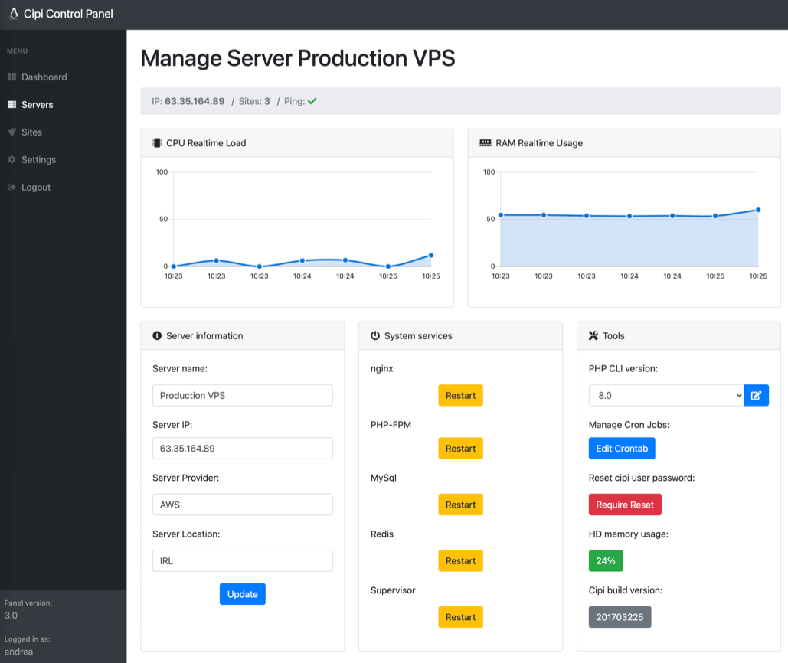
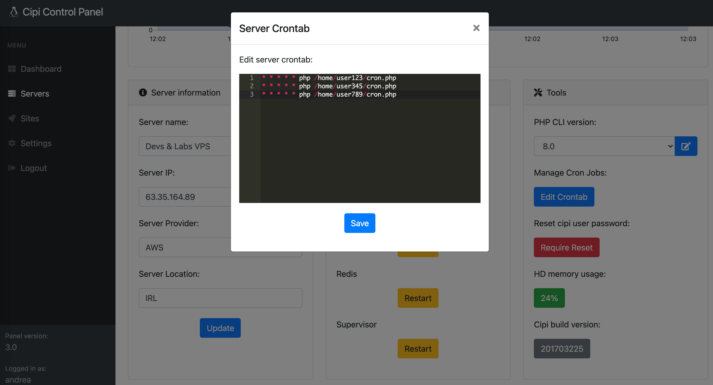
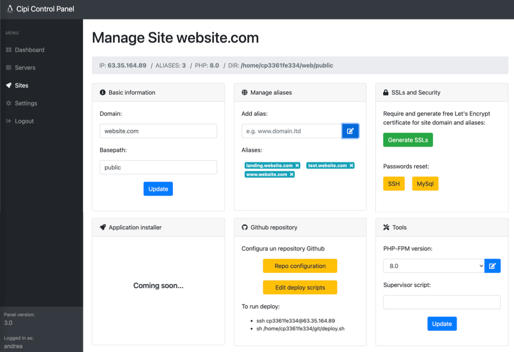
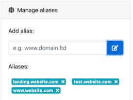

Features
- Easy install: setup one or more servers with a click in less than ten minutes without be a Linux expert.
- Server Management: manage one or more servers in as easy as a few clicks without be a LEMP Guru.
- Perfect stack for PHP devs: Cipi comes with nginx, PHP, MySql, Composer, npm, Redis and Supervisor.
- Multi-PHP: Run simultaneous PHP versions at your ease & convenience.
- Secure: no unsed open ports, unprivileged PHP, isolated system users and filesystem, only SFTP (no insecure FTP), http/2, Free SSL certificates everywhere.
- Always update: Cipi takes care about your business and automatically keeps your server's software up to date so you always have the latest security patches.
- Real-time servers stats: Keep an eye on everything through an awesome dashboard.
- Always up to date: Cipi installs last versions of LTS dists and supports Ubuntu 20.04 LTS.
Cipi Stack
| Linux OS |
Ubuntu 20.04 LTS |
| nginx |
1.18 |
| MySql |
8 |
| node.js |
16 |
| npm |
8 |
| PHP-FPM |
7.4 / 8.0 / 8.1 |
| PHP CLI |
7.4 / 8.0 / 8.1 |
PHP .ini custom configutation
max_filesize / execution_time |
256MB / 180 |
PHP-FPM pool (for each application)
pm.max_children / pm.max_requests |
50 / 500 |
| PHP extensions |
common, curl, openssl, bcmath, mbstring, tokenizer, mysql, sqlite3, pgsql, redis, memcached, json, zip, xml, soap, gd, imagick, fileinfo, imap, cli |
| Redis |
yes |
| Composer |
2.x |
| Supervisor |
yes |
| Git |
yes |
| Let's Encrypt |
yes |
| http/2 Support |
yes |
| fail2ban |
yes |
| ffmpeg |
yes |
| SSH/SFTP |
yes |
Installation
The best way to install Cipi is running autoinstall script on a VPS with 20.04 LTS (fresh installation):
wget -O - https://cipi.sh/go.sh | bash
AWS by default disables root login. To login as root inside AWS, login as default user and then use command sudo -s.
$ ssh ubuntu@<your server IP address>$ ubuntu@aws:~$ sudo -s$ root@aws:~# wget -O - https://cipi.sh/go.sh | bash
At the end of installation process, Cipi will show some password that you have to conserve.
Before you can use Cipi, please make sure your server fulfils these requirements:
- Ubuntu 20.04 x86_64 LTS (Fresh installation)
- If the server is virtual (VPS), OpenVZ may not be supported (Kernel 2.6)
- Hardware Requirement: More than 1GB of HDD / At least 1 core processor / 512MB minimum RAM / At least 1 public IP Address (NAT VPS is not supported)
- For VPS providers such as AWS, those providers already include an external firewall for your VPS, please open port 22, 80 and 443 to install and use Cipi.
- Installation may take up to about 30 minutes which may also depend on your server's internet speed. After the installation is completed, you are ready to use Cipi to manage your servers.
- To correctly manage remote servers Cipi has to be on a public IP address... do not use it in localhost!
Security Tips
Default Cipi username and password are: administrator / 12345678.
After first login, you could change them into "settings" area.
At the end of installation process, Cipi will show some password that you have to conserve bacause Cipi will disable "root" access so the only way to SSH into your server after Cipi installation as root is using "cipi" user.
Another useful tip to keep safe your Cipi Panel, is to configure a panel domain/subdomain into "settings area" and require a free SSL certicate for it.
Deploy Server
To deploy a new server, click on button: New Server into Server area.
and fill the form with these data:
| Name |
The name of Server (e.g. "Production Server") |
| IP |
The IP of the Server (IPv4 not IPv6) |
| Provider |
Server Provider (e.g. "Digital Ocean") |
| Location |
Server location (e.g. "Amsterdam DC3") |
Submiting the form, an installation script will appears, copy it and run into your server. At the end of installation process, Cipi will automatically detect the end of installation and will lets you to manage the new server.
Manage a server
To manage a server you have to click on Manage button into Servers area and Cipi will show you a page like this:

Server monitor
Cipi shows realtime usage status of server CPU and RAM into "MANAGE SERVER" area.
Server information
Each server information can be edited filling "Server information" form into "MANAGE SERVER" area:
Server services
Each server service can be restarted clicking a button into "MANAGE SERVER" area.
The managed services are:
- nginx
- PHP-FPM
- MySql
- Redis
- Supervisor
Server PHP CLI
For each server you can choose which PHP version use into the CLI within a simple select into "MANAGE SERVER" area.
Available versions are:
Server crontab
For each server you can edit crontab into "MANAGE SERVER" area.

Server root password
For security reasons, Cipi disabels "root" user and create a secondary root user with "cipi" username.
To reset cipi User password click: Require Reset into "MANAGE SERVER" area.
Server HD usage
Cipi shows a realtime server HD usage status into "MANAGE SERVER" area.
Server Cipi build
Cipi shows the version of Cipi Client build into "MANAGE SERVER" area.
Destroy a server
To destroy a server you have just to click Delete button into "Servers" area.
Create a site
To create a site, click on button: New Site into Sites area.
and fill the form with these data:
| Domain |
The main site domain (e.g. domain.ltd or subdomain.domain.ltd) |
| Server |
Destination Server |
| PHP-FPM version |
PHP Version (7.4 or 8.0, 8.1) |
| Basepath |
Entrypoint of Document Root (e.g. "public" in Laravel Applications) |
At the end you will receive a summary with SFTP/SSH and database credentials useful to manage your new Site.
Manage a site
To manage a site you have to click on Manage button into Sites area and Cipi will show you a page like this:

Site information
Each site information can be edited filling "Site basic information" form into "MANAGE SITE" area:
| Domain |
Edit Site Main Domain |
| Basepath |
Edit Entrypoint of Document Root |
Site Aliases

Cipi lets to manage unlimited domain aliases for each site. You can manage them in "Manage Alias" box into "MANAGE SITE" area.
Site SSL Certs
Cipi generates free Let's Encrypt SSL certificates for each site domain and alias domains.
To do it, be sure that you server 443 port is open and click "Generate SSLs" button into "MANAGE SITE" area.
Certificats renew is managed automatically by Cipi server client so you don't need to worry about it.
Site SSH Reset
Every site is associated to an unique SSH user so each site is isolated from each other.
To reset SSH user password click on "password reset SSH" button into "MANAGE SITE" area.
At the end you will receive a summary with SFTP/SSH and database credentials.
Site MySql Reset
Every site is associated to a MySql database and MySql user.
To reset MySql user password click on "password reset MySql" button into "MANAGE SITE" area.
At the end you will receive a summary with SFTP/SSH and database credentials.
Site Application Installer
This feature is not ready yet.
Site Github Repository
Configure a Github repository inside your site is very easy with Cipi.
Follow the steps inside "Github Repository" box into "MANAGE SITE" area:
- Set Github repository
- Set repository branch
- Add deploy key into github.com
- Use sh script to deploy your site
Site PHP-FPM version
For each site you can choose which PHP FPM version use within a simple select into "MANAGE SITE" area.
Available versions are:
Site Supervisor command
For each site you can set a supervisor command filling "supervisor" input into "MANAGE SITE" area.
For example you can set queue jobs into a Laravel site using this command:
php /home/cpUser/web/artisan queue:work sqs --sleep=3 --tries=3 --max-time=3600
Customize site nginx conf
You can customize every Site nginx configuration using cipi root user:
- Run
ssh cipi@<server-ip>
- Run
sudo nano /etc/nginx/cipi/<app-user>.conf
- Edit your custom configuration
- Run
sudo systemctl restart nginx.service
Destroy a site
To destroy an site you have just to click Delete button into "Sites" area.